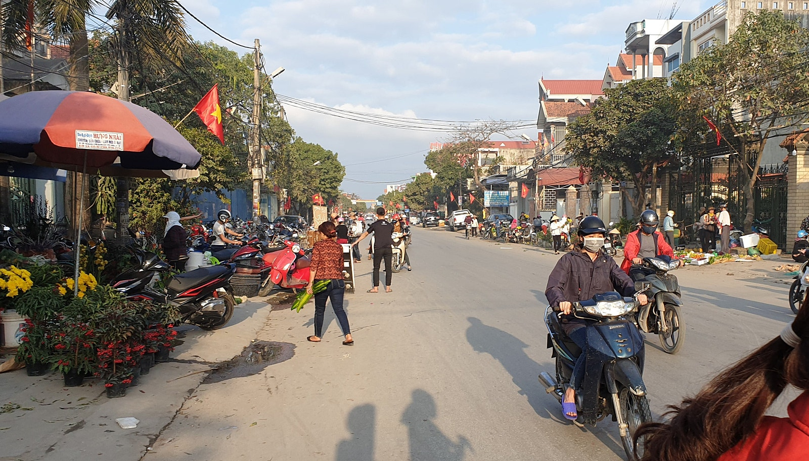
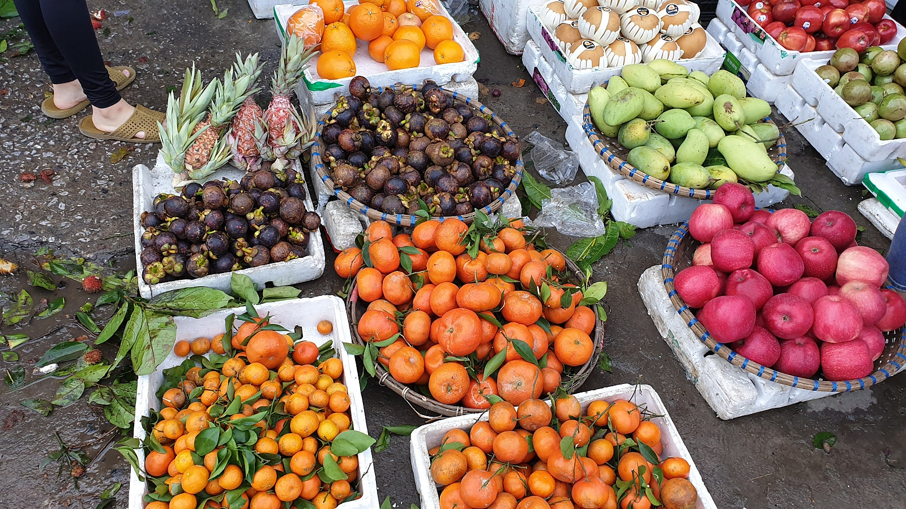
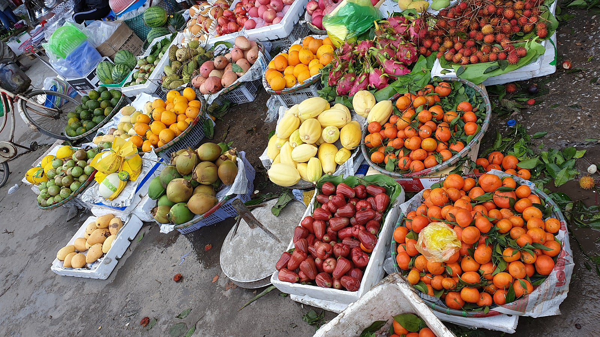

아내의 고향에서 처음 만난 베트남 전통시장
베트남에 처음 가 본 한국인이라면 의외로 놀라는 풍경이 많습니다.
도로를 가득 메운 오토바이도 그렇고, 길거리에서 음식을 먹는 모습이나 활기찬 전통시장도 그렇습니다.
저 역시 베트남인 아내의 고향인 하이퐁을 방문하면서 한국과는 다른 여러 생활문화를 직접 경험했습니다.
그중 지금도 기억에 선명하게 남아 있는 것이 베트남의 전통시장입니다.
관광객을 위해 만들어진 시장이 아니라, 현지 사람들이 매일 먹을 음식과 생활에 필요한 물건을 사기 위해 찾는 동네 시장이었습니다.
베트남 사람들의 실제 생활을 가까이에서 볼 수 있는 곳이었습니다.

아내의 오토바이 뒤에 타고 시장으로 가던 아침
어느 날 아침, 아내와 함께 오토바이를 타고 시장에 간 적이 있습니다.
저는 헬멧을 쓰고 아내가 운전하는 오토바이 뒤에 앉았습니다.
아침 햇살이 막 비추기 시작하던 시간이었습니다.
논밭 사이로 이어진 좁은 길을 따라 오토바이가 달렸고, 시원한 아침 바람이 얼굴을 스쳐 지나갔습니다.
한국에서는 제가 평소 쉽게 경험하기 어려웠던 풍경이었습니다.
높은 건물과 넓은 도로 대신 논과 밭, 작은 주택과 좁은 길이 이어졌습니다.
그 길을 오토바이를 타고 달리던 아침의 공기와 풍경은 지금도 상당히 선명하게 기억하고 있습니다.
베트남의 유명 관광지도 많이 보았지만, 이상하게도 이런 평범한 순간이 더 오래 기억에 남습니다.
아침부터 사람들로 가득했던 베트남 시장
잠시 후 시장에 도착했습니다.
이른 시간이었지만 시장은 이미 많은 사람들로 북적이고 있었습니다.
오토바이를 타고 장을 보러 온 사람들.
길가에 앉아 채소를 파는 상인들.
대야와 바구니에 가득 담긴 채소와 과일.
그리고 시장 곳곳에서 풍겨오는 음식 냄새까지.
시장 전체가 아침부터 활기차게 움직이고 있었습니다.
누군가는 가족이 먹을 채소를 고르고 있었고, 누군가는 생선이나 고기를 사고 있었습니다.
출근이나 일을 시작하기 전에 아침 식사를 하는 사람들도 볼 수 있었습니다.
저에게는 낯선 풍경이었지만, 현지 사람들에게는 매일 반복되는 평범한 일상이었습니다.
시장 안으로 오토바이가 다니는 낯선 풍경
베트남 시장에서 처음 놀랐던 것 중 하나는 오토바이였습니다.
시장 입구에만 오토바이가 있는 것이 아니었습니다.
사람들이 장을 보는 공간 가까이까지 오토바이가 자연스럽게 오가는 모습을 볼 수 있었습니다.
오토바이를 탄 채 천천히 이동하는 사람도 있었고, 자전거를 끌고 시장 안을 다니는 어르신도 있었습니다.
한국의 시장에서는 차량과 사람이 다니는 공간을 어느 정도 구분하는 것이 익숙합니다.
그래서 처음에는 조금 위험해 보이기도 했습니다.
하지만 현지 사람들은 오토바이가 지나가면 자연스럽게 비켜서고, 오토바이 역시 사람들 사이에서는 천천히 이동했습니다.
지난 오토바이 문화 이야기에서도 적었지만, 베트남에서 오토바이는 단순한 교통수단이 아닙니다.
장을 보고, 물건을 싣고, 집과 시장을 오가는 생활 속 이동수단입니다.
전통시장에서도 그 모습을 그대로 볼 수 있었습니다.

한국 시장과는 달랐던 식재료 판매 모습
시장 안을 둘러보다 보면 한국에서는 쉽게 보기 어려운 모습도 만날 수 있습니다.
제가 방문했던 시장에서는 살아 있는 닭을 판매하는 모습도 볼 수 있었습니다.
손님이 구입하면 현장에서 바로 손질하는 경우도 있었습니다.
처음 보았을 때는 솔직히 적지 않게 놀랐습니다.
한국에서는 대부분 손질과 포장이 끝난 식재료를 구입하는 환경에 익숙하기 때문입니다.
하지만 베트남의 전통시장에서는 식재료가 유통되고 판매되는 모습이 한국과 상당히 다르게 느껴졌습니다.
채소와 과일도 바구니나 대야에 담아 판매하고, 생선과 고기 역시 시장 특유의 방식으로 판매되고 있었습니다.
깔끔하게 포장된 대형마트의 모습과는 분명 달랐습니다.
하지만 그것 역시 현지 사람들이 오랫동안 익숙하게 이용해 온 시장문화의 한 모습이었습니다.
정돈된 시장은 아니었지만 사람들의 생활이 보였습니다
솔직히 말하면 제가 방문했던 베트남 전통시장은 한국의 현대화된 시장처럼 깔끔하고 정돈된 모습은 아니었습니다.
통로가 좁은 곳도 있었고, 사람과 오토바이가 함께 이동하기도 했습니다.
처음에는 조금 어수선하게 느껴졌습니다.
하지만 한동안 시장을 둘러보고 있으니 다른 모습이 보이기 시작했습니다.
이른 아침부터 나와 장사를 준비하는 사람들.
오토바이를 타고 바쁘게 물건을 나르는 사람들.
가족의 하루 식사를 준비하기 위해 채소와 고기를 고르는 사람들.
그 모습을 보고 있으면 베트남 사람들의 생활이 가까이에서 느껴집니다.
저는 흔히 말하는 ‘사람 사는 냄새가 난다’는 표현이 이런 시장에 잘 어울린다고 생각합니다.
베트남 시장에서 빼놓을 수 없는 과일
베트남 시장에 가면 저는 자연스럽게 과일을 먼저 둘러보게 됩니다.
베트남에서는 한국에서 비교적 비싸게 판매되는 다양한 열대과일을 쉽게 만날 수 있습니다.
망고와 용과, 망고스틴, 람부탄, 코코넛 등 처음에는 이름조차 익숙하지 않았던 과일도 많았습니다.
시장에는 다양한 종류의 과일이 한가득 쌓여 있었습니다.
색깔도 화려하고 종류도 많아 과일을 구경하는 것만으로도 재미가 있었습니다.
저 역시 베트남을 방문하면서 한국에서는 자주 먹지 않았던 과일을 하나씩 먹어보게 되었습니다.
지금도 베트남 시장에 가면 과일을 판매하는 곳부터 자연스럽게 눈이 갑니다.
고수와 쌀국수처럼 음식에 대한 기억도 있지만, 베트남 하면 다양한 열대과일 역시 빼놓기 어렵습니다.


아침에는 활기찼던 시장이 한낮에는 조용해졌습니다
처음 시장을 방문했을 때 재미있게 느꼈던 점이 있습니다.
아침에는 그렇게 많은 사람들로 붐비던 시장이 시간이 지나면서 상당히 조용해졌습니다.
처음에는 시장이 벌써 문을 닫는 것인지 궁금했습니다.
하지만 베트남을 다니다 보니 시장마다 운영 방식은 다르지만, 이른 아침이나 늦은 오후에 사람들이 많이 찾는 시장을 자주 볼 수 있었습니다.
특히 날씨가 더운 날에는 한낮보다 아침과 저녁에 사람들의 움직임이 활발하게 느껴졌습니다.
아침에는 하루 식사에 필요한 식재료를 사거나 아침 식사를 하기 위해 사람들이 시장을 찾습니다.
저녁이 가까워지면 일을 마친 사람들이 다시 시장에 들러 음식과 필요한 물건을 구입합니다.
그래서 같은 시장이라도 방문하는 시간에 따라 분위기가 상당히 다르게 느껴졌습니다.
활기찬 아침시장과 잠시 조용해진 한낮.
그리고 다시 사람들이 모이는 저녁시장.
그 변화 역시 저에게는 흥미로운 베트남의 생활문화였습니다.
오늘 먹을 음식을 시장에서 준비하는 생활
한국에서는 주말에 대형마트를 찾아 여러 날 먹을 식재료를 한 번에 구입하는 가정도 많습니다.
제가 베트남의 가족과 생활하며 본 모습은 조금 달랐습니다.
그날 먹을 채소와 고기, 생선 등을 시장에서 구입하는 경우가 많았습니다.
자연스럽게 시장을 찾는 횟수도 많았습니다.
시장에는 채소와 과일뿐만 아니라 고기, 생선, 음식, 생활용품까지 일상에 필요한 다양한 물건이 모여 있습니다.
오토바이를 타고 시장에 가서 필요한 물건을 사고 다시 집으로 돌아옵니다.
저에게는 특별한 베트남 문화처럼 보였지만, 현지 사람들에게는 너무나 평범한 하루의 일부였습니다.
아마 제가 베트남 시장을 좋아하게 된 이유도 이런 점 때문인지 모릅니다.
관광지가 아니라 실제 사람들이 살아가는 모습을 볼 수 있기 때문입니다.
관광지보다 오래 기억에 남은 베트남의 평범한 아침
베트남을 여러 번 방문하면서 유명한 관광지와 아름다운 풍경도 많이 보았습니다.
하지만 지금도 기억에 오래 남아 있는 것은 의외로 평범한 순간들입니다.
아침 일찍 아내의 오토바이 뒤에 타고 시장으로 가던 길.
논밭 사이로 불어오던 시원한 바람.
시장 입구에 줄지어 있던 오토바이.
채소와 과일을 고르던 사람들과 이른 아침부터 장사를 시작한 상인들.
관광지에서 사진을 찍었던 순간보다 현지 사람들이 살아가는 모습을 가까이에서 보았던 경험이 더 오래 기억에 남았습니다.
저에게 베트남은 처음부터 익숙한 나라는 아니었습니다.
하지만 국제결혼을 하고 아내의 가족과 생활하며 베트남의 평범한 일상을 하나씩 경험했습니다.
그리고 그런 경험이 쌓이면서 베트남이라는 나라를 조금씩 이해하게 되었습니다.
어쩌면 새벽시장과 저녁시장, 그리고 그곳을 오가는 수많은 오토바이의 모습이야말로 제가 경험한 베트남의 일상을 가장 잘 보여주는 풍경 중 하나인지도 모르겠습니다.
한베커플은 실제 한·베 국제결혼과 베트남 현지 경험을 바탕으로, 직접 보고 느낀 베트남의 생활과 문화 이야기를 전하고 있습니다.